In "Alice in Wonderland," young Alice follows a white rabbit down a rabbit hole and finds herself in a peculiar and enchanting world called Wonderland. Throughout her journey, she encounters a series of eccentric and whimsical characters, such as the Cheshire Cat, the Mad Hatter, and the Queen of Hearts. Alice navigates through a topsy-turvy realm where logic is often turned upside down, and nothing is as it seems. As she tries to make sense of this extraordinary world and find her way back home, Alice embarks on a delightful and sometimes bewildering adventure, filled with curious encounters and thought-provoking riddles. Along the way, she learns valuable lessons about identity, imagination, and the power of embracing one's curiosity.
